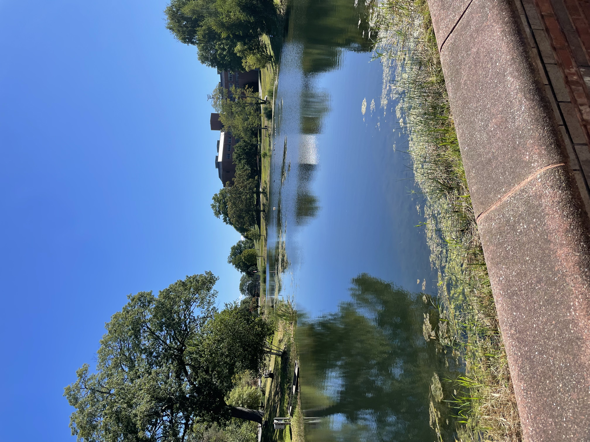
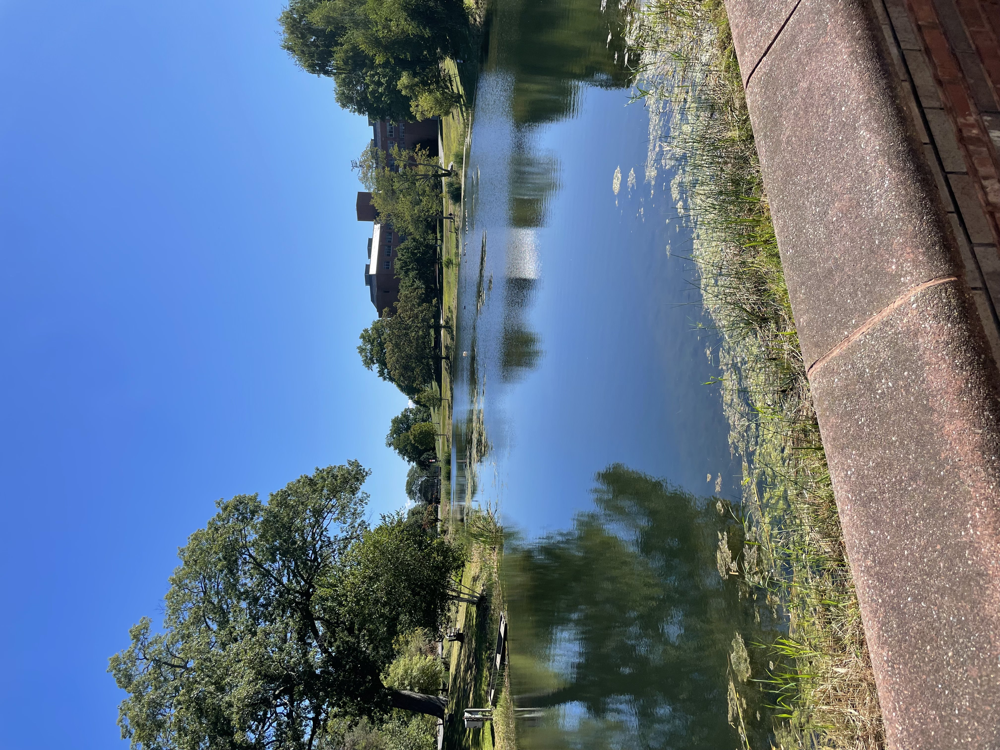

International Mobility - Exchange program at UConn
(University of Connecticut, United-States)

During my second year of engineering school, I have the opportunity to participate in an international exchange program at the University of Connecticut (UConn) in the United States. This experience is a significant milestone in my academic journey, allowing me to immerse myself in a different culture and educational system.

Arrival in United-States
Before arriving at UConn (Connecticut), I first landed at Newark Liberty Airport (New Jersey). During my second day in United States and after sleeping at my roomate's house, I moved in UConn campus where I was welcomed by the UConn EGL team (Experience Global Learning).
Orientation week
First week was "Orientation week". This week was the occasion to visit UConn campus and learn about life on campus while it is not busy with 2000+ students. Orientation week was also the moment we looked for traveling possibilities. (See Trips.) Finaly, I also took time to finalise some administrative papers for the job I applied on campus. (See Life on campus)
 

During first two weeks, I was able to select or modify selection of classes I will follow during the 4 months at UConn. I tried to choose courses that were close to my studies at ENSEEIHT and also new for me. The following classes I followed were a mean to study with a different perspective :
CSE 3160, Functional programming : This one is close to Logiciel in SN. I studied a new language : haskell that was a bit different from OCaml, which I already studied before.
CSE 3150, C++ Essentials : This course was an other way to learn Object Oriented Programmation (OOP). At N7, we saw Java. I could see subtilities of C++ as well as strengthen my knowledge in OOP.
CSE 4300, Operating Systems : This course was a continuation of Systems Programming at N7 and a way to see OS in more details.
CSE 3500, Algorithm and Complexity : This course was intersting to understand Algorithm complexity. We saw abstract notions like NP and P set of algorithm.
ECE 3101, Signals and Systems : In Signal and Systems, I saw signal processing using Matlab.
- Northwood Apartments — bref descriptif, projet marquant.
- Sports events — compétences acquises.
- Job in Refectory — compétences acquises.
ECE 3101, Signals and Systems : In Signal and Systems, I saw signal processing using Matlab.